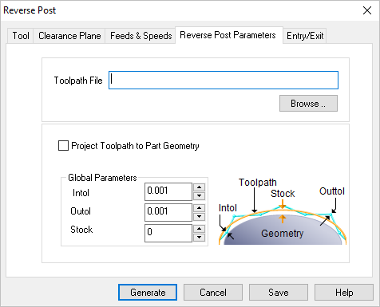

The following Cut Parameters tab allows you to define the cut parameters for the current 3 Axis Reverse Post Machining operation. You can set Global Parameters, and specify the posted Toolpath File via this tab of the operation dialog. The Global Parameters section allows you to set the tolerance value to be used in machining. A uniform thickness or stock that needs to be left around the part can also be specified here. Refer to each option below.
 Dialog Box: Reverse Post Parameters tab, Reverse Post Machining, 3 Axis |
You can load a toolpath file using the edit field in the top of this dialog. Use the Browse button to locate the file. Two types of files can be reverse posted. •APT CL - One is standard APT CL text files. These files should have a .cls or .apt extension on them. •ISO - The other type is ISO standard G Code file. This file can have any extension other than the ones used for APT CL files. |
Check this box to have the toolpath projected onto the part geometry. |
 Global Parameters, 3 Axis Operations The Global Parameters section allows you to set the tolerance value to be used in machining. Intol and Outol are allowable deviations (tolerances) from the actual part geometry plus the Stock layer (if any). A uniform thickness or stock that needs to be left around the part can be specified here. Intol / Outol
Stock |